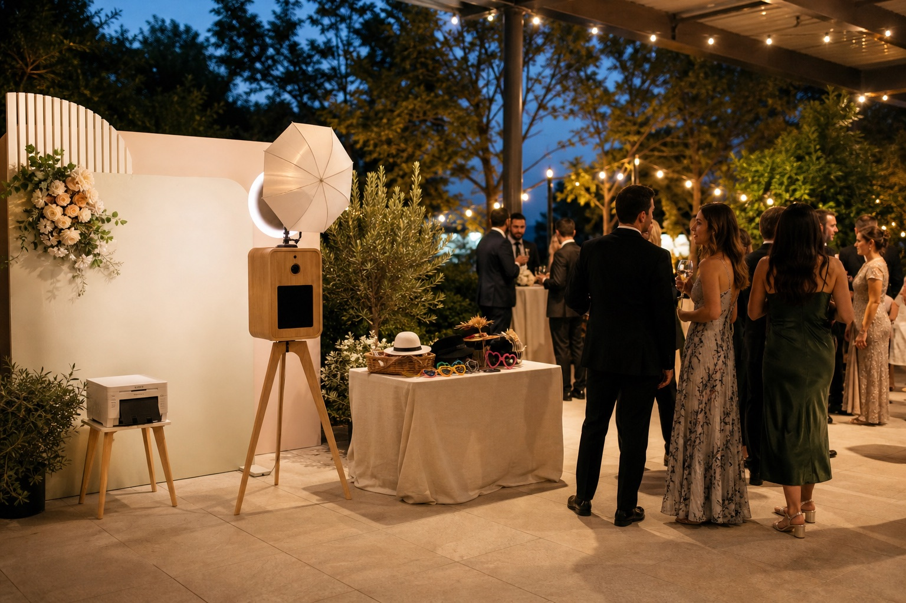

A photo booth works best when guests naturally have a little free time. The goal is not just to have the booth available. The goal is to open it when people are relaxed, nearby, and ready to jump in without feeling like they are missing dinner, speeches, or the dance floor.
For many weddings, three operating hours is a practical starting point. The best wedding photo booth window is usually cocktail hour through early reception, or the transition after dinner through early dancing. The right choice depends on your venue layout, guest count, and formal-event schedule.
The Short Answer: Plan Around Three Active Hours
A three-hour booth window can cover more of the reception than it first appears to, as long as those hours match periods when guests are free to move. Start with the moments you most want the booth available for, then work backward from the reception timeline.
- For early guest participation: open during cocktail hour and continue into the reception.
- For a party-focused booth: open near the end of dinner and continue through early dancing.
- For mixed-age guest lists: avoid waiting until late evening, when families and older guests may be leaving.
Option 1: Open During Cocktail Hour
Cocktail hour is one of the easiest times to start the photo booth. Guests have arrived, they are dressed up, and they are usually looking for something to do while the couple takes portraits or the reception space gets finalized.
This works especially well if the booth is near the bar, lounge area, or reception entrance. Guests can grab a drink, take photos, and start the evening with something fun before formal events begin.
The only downside is that cocktail hour can go fast. If your venue is moving guests between spaces, or if the booth is tucked away from the main flow, some people may miss it.
Option 2: Open After Dinner
Opening after dinner can work really well because guests are settled, speeches are usually done, and people are starting to move around. This is often when the booth line gets busiest.
If you want the booth to feel like part of the party, this is a strong option. Guests have more time, groups are easier to gather, and the photos often get funnier as the night goes on.
The main thing to watch is timing. If the booth opens too late, older guests or families with kids may leave before using it. If you have a lot of guests who may head out early, consider opening before dinner ends or right after the first dances.
Option 3: Keep It Open Through Dancing
A photo booth near the dance floor can add a lot of energy. Guests take a few photos, dance, come back with a different group, and take more. This is when unlimited prints and QR downloads really matter because people tend to use the booth more than once.
This timing works best when your booth is easy to see and not hidden in a hallway. If guests have to leave the party completely to find it, usage usually drops.
Three Sample Wedding Photo Booth Schedules
These examples are planning patterns, not fixed rules. Move the times to match your ceremony, meal service, and venue access.
Cocktail hour through dinner transition
- 5:30 p.m.: booth opens as cocktail hour begins.
- 6:30 p.m.: guests move into the reception space.
- 8:30 p.m.: booth closes after dinner begins to wind down.
After dinner through early dancing
- 7:30 p.m.: dinner and speeches are finishing.
- 8:00 p.m.: booth opens as guests begin moving around.
- 11:00 p.m.: booth closes after three active hours.
Split around formal moments
If the booth is available while dinner or speeches are happening, let guests use it naturally instead of announcing it during a formal moment. A clear announcement after dinner can create a second wave of participation without interrupting the program.
Where Should the Photo Booth Be Placed?
Timing matters, but placement matters just as much. The booth should be close enough that guests notice it, but not so close that it blocks catering, speeches, or the dance floor.
Good spots include near the bar, near the reception entrance, beside the dance floor, or in a visible lounge or foyer area. Avoid placing it too far outside the main reception space unless there are signs or the venue naturally sends guests that way.
How Far in Advance Should You Book?
There is no universal booking deadline. Once your date and venue are confirmed, request availability and share your approximate reception timeline. That gives you time to confirm the operating window, setup location, power access, backdrop choice, and photo template before the event.
If your timeline is still changing, you do not need every minute finalized before asking for a quote. Start with the ceremony time, reception start, venue, and the part of the evening when you most want guests using the booth.
Wedding Photo Booth Timing FAQ
How long should a photo booth be open at a wedding?
Three operating hours is a practical starting point for many receptions. Put those hours around cocktail hour, the transition after dinner, or early dancing so guests can participate without missing formal moments.
Should the booth run during dinner?
Dinner is usually not the strongest operating window because guests are seated and focused on food, speeches, and formal moments. If the booth is already open, keep it visible and expect participation to increase when guests begin moving again.
How far in advance should we book?
Request availability once your wedding date and venue are confirmed. There is no single cutoff, so confirming earlier gives you more time to coordinate the floor plan and operating window.
Final Recommendation
If you are not sure, open the photo booth earlier rather than later. Guests look their freshest near the beginning of the night, families are still around, and the booth can help warm up the reception before dancing starts.
Essential Reading for Wedding Planning
To make sure your wedding day runs flawlessly, check out our other expert planning guides:
- Why rent a booth? Learn the key social and memory-making benefits in our Wedding Photo Booth Benefits Guide.
- Compare equipment & quality: Learn how to spot professional gear in our guide on How to Choose a Bay Area Photo Booth Vendor.
- Understand the budget: See exactly what to expect in our comprehensive Bay Area Wedding Photo Booth Cost Guide.
Before finalizing the floor plan, share our wedding photo booth setup checklist with your coordinator for space, power, connectivity, and load-in details.
For Bay Area weddings, Handsome Photobooth includes setup, an attendant, unlimited prints, QR downloads, and a custom template, so the booth can fit naturally into your timeline without adding another thing for you to manage.
See our dedicated Bay Area wedding photo booth rental package for pricing, what is included, and reviews from real couples.